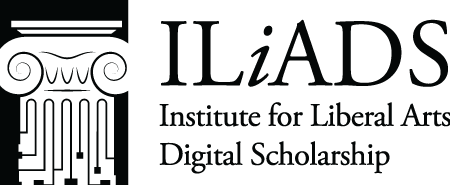

About the project
From the seventeenth century to the nineteenth, the borderlands region of Araucanía in southern Chile was a contested region. Agents of the Spanish Empire, and then agents of the independent Chilean state, periodically met to negotiate with leaders of the Indigenous peoples of the region, collectively known as the Mapuche. These meetings, and the treaties agreed at them, were called parlamentos.
These treaties are historically significant. Nowhere else in the Americas was there such a sustained program of negotiation with, rather than mere conquest and subjugation of, Indigenous peoples. Taking place in open spaces along the border between their respective territories, often with hundreds of people in attendance, the parlamentos meetings created temporary microcosms of the cultural heterogeneity of Chile. Here the participants had to translate and negotiate not only the words of a document but also the fundamental concepts of authority, nationhood, and sovereignty without which the terms of the agreement could have no meaning common to all parties.
The last formal parlamento took place in 1825, during the early period of independent Chilean statehood. This marked the end of the more even-handed negotiations that had obtained in the era of the Spanish Empire. From that point on, the desire of the Chilean state to govern its interior by one national code of law, rather than by treaties with quasi-independent Indigenous nations living within its borders, led to a diminishing position for the Mapuches. Nonetheless, the era of the parlamentos has interest well beyond Chile as a case study in the possibility for effective diplomatic Settler-Indigenous interactions that proved elusive in most other contexts.
The Parlamentos Project: Goals
Parlamentos documents, despite their intrinsic historical, linguistic, and ethnographic interest, have attracted little sustained analysis. Only a few have ever been published as full texts, and even then only in their original and often challenging Castilian Spanish.
This project is a born-digital edition and translation which, when complete, will include full Spanish text, English translation, and historical and linguistic commentary on four selected parlamentos documents.
The project is still in its early stages. The team was granted a Digital Humanities Planning Grant from the National Endowment for the Humanities for the 2022-2023 academic year to create a pilot version with a single document.
Our Team
This is a collaborative effort by faculty members at The University of Pittsburgh at Greensburg and is an outgrowth of that institution's established strengths in Digital Studies represented in and supported by the Center for the Digital Text.
- Pilar Herr, Ph.D., History (PI)
- Elizabeth Contreras, M.A., Spanish and Translation Studies
- William Campbell, Ph.D., History and Digital Studies
- Sean DiLeonardi, Ph.D., Literature and Digital Studies
- Eleanor Withers, Pitt-Greensburg Undergraduate, History and Digital Studies
Citation
We hope this project supports additional research on the parlamentos. To cite our work, use the following format:
Pilar Herr, et al., "Parlamento de Negrete (1803)" [for example], Parlamentos, the University of Pittsburgh, 2023. parlamentos.pitt.edu
Acknowledgments
The Parlamentos Project is made possible by support from the following institutions:
|  |
|---|
Permissions
This project combines original research, translations, and textual markup done using TEI XML. The website is hosted by The University of Pittsburgh.
Translations copyright: All rights reserved. To reprint or borrow substantially from original translations, contact the project members listed above. |
 All code is licensed under a Creative Commons Attribution-NonCommercial-ShareAlike 4.0 International License. |
 You are invited to visit our GitHub repo, where all of our code and texts are available. |
|---|